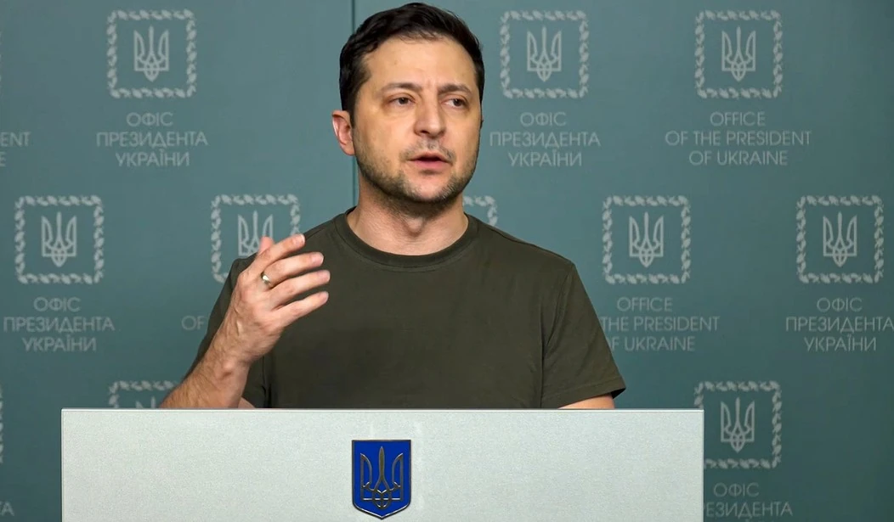

TOWNHALL ·
Zelensky Has Pointed Out Something the Soviets Recognized in 1978: The West Has Lost its Courage
Read the original
Since Russian troops first invaded Ukraine on Feb. 24, Ukrainian President Volodymyr Zelensky has become a symbol of resistance, hope and democracy around the free world.
Although the whole story is far more complex – and often much darker – Zelensky’s heroic stand against Russian despot Vladimir Putin’s invading forces has offered the West a window into what it appears to be lacking today: courage.
The Atlantic recently published a piece comparing President Zelensky to Charles de Gaulle – the French military leader and president who led France against Nazi occupation during the Second World War.
“Zelensky, like de Gaulle, is fighting for the idea of his homeland as well as its liberty, for its right to be free and dignified,” the article reads.
Although the author concedes that “analogizing a contemporary figure such as Zelensky by looking for parallels in World War II is necessarily limiting,” his comparison echoes the sentiment of a majority of Americans who believe Ukraine’s battle-tested president is the most trustworthy leader in the world today.
But what Ukraine lacks in democratic institutions and economic freedom, it certainly makes up for in courage. The unmatched resilience of the Ukrainian people and the fierce resistance put up by the Ukrainian armed forces makes that point incontestable.
The same, however, might not necessarily be said about the West, which has been slow to act against Putin’s invading forces as they continue to commit war crimes against civilians and turn Ukraine’s once vibrant cities into smoldering piles of rubble.
Although leaders across the free world have been quick to regurgitate soundbites about democracy, human rights and national self-determination, they have been reluctant to go the full distance even on non-military measures against the Kremlin.
This is especially troubling as the Kremlin continues to warn that it is considering its nuclear options should Sweden or Finland join NATO.
While the reluctance to put boots on the ground or establish a no-fly zone over Ukraine is understandable (and probably wise), Washington and its European allies could have sent fighter planes, anti-aircraft missiles, cruise missiles and other arms to help Ukraine as soon as the Russian invasion became imminent.
Instead, political in-fighting in European capitals left the Ukrainian armed forces largely unprepared to face the Russian threat, even as evidence mounts that the Kremlin has already used chemical weapons in Ukraine -- crossing a line that President Biden previously warned would force the U.S. to respond.
When responding to Biden’s charge that Putin is a “butcher” who cannot stay in power, Zelensky blasted the West’s “ping-pong about who and how should hand over jets” and other weapons while Russian bombs continue to kill women and children in cities and towns across Ukraine.
“I’ve talked to the defenders of Mariupol today. I’m in constant contact with them. Their determination, heroism and firmness are astonishing,” Zelensky said in a video address. “If only those who have been thinking for 31 days on how to hand over dozens of jets and tanks had 1 percent of their courage.”
Western politicians, it seems, even lack the courage to stop Russian energy from flowing into Europe – a decision that has allowed the Kremlin to continue to fund its bloody war machine.
The fact that it took nearly 7 weeks to remove Russia from the UN’s human rights body offers further proof that the West is afraid to stand up to Putin.
"The alliance is afraid of controversial things, and confrontation with Russia," Zelensky lamented in an interview with ABC News.
Ukraine’s president further referenced the West's lack of courage in a televised address on the 43rd day of the war when he told viewers that Ukrainians are the “bravest in the world.”
“If everyone in the world had at least ten percent of the courage we Ukrainians have, there would be no danger to international law at all. There would be no danger to the freedom of the peoples. We will spread our courage. Let's start a special global campaign."
But if Zelensky’s charges against the West sound familiar, it’s because they echo claims made by Soviet intellectuals during the darkest days of the Cold War.
In his 1978 Harvard commencement address, exiled Russian novelist and outspoken critic of communism Aleksandr Solzhenitsyn lamented the fact that a “decline in courage may be the most striking feature which an outside observer notices in the West in our days.”
Solzhenitsyn continued: “The Western world has lost its civil courage, both as a whole and separately, in each country, each government, each political party, and, of course, in the United Nations. Such a decline in courage is particularly noticeable among the ruling groups and the intellectual elite, causing an impression of loss of courage by the entire society.”
Solzhenitsyn also argued that the decline of courage in the Western world is “ironically emphasized” by liberal governments who bully weak states that cannot offer any resistance, but later become “paralyzed” when forced to confront powerful governments with formidable military capabilities.
Ultimately, it appears that Zelensky has pointed out something the Soviets – and now the Russians – have known for years. Although the U.S. and its Western partners are quick to pacify weak nations when it’s to their geopolitical benefit, they will give in to the will of powerful tyrants the moment confrontation becomes a real possibility.
As tyrants around the world continue to challenge the current geopolitical world order, we must all pray that the same United States that stared down the Soviet Union during the Cuban Missile Crisis in 1962 is not lost to history.